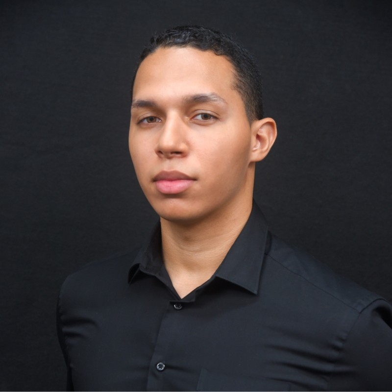

Nailson Xavier
UX/UI & Product Designer
Sou formado em Sistemas para Internet pela UNICAP e venho aprofundando minha visão estratégica com formações em Product Management e Design de Produtos Digitais (EBAC e CESAR School). Atuo na intersecção entre a resolução de dores do usuário, experimentação com testes A/B e viabilidade técnica, colaborando com times multidisciplinares e internacionais.

Sobre Mim
Sou formado em Sistemas para Internet pela UNICAP e venho aprofundando minha visão estratégica com formações em Product Management e Design de Produtos Digitais (EBAC e CESAR School).
Atuo na intersecção entre a resolução de dores reais do usuário, experimentação com testes A/B e viabilidade técnica, colaborando estreitamente com times multidisciplinares e internacionais. Minha bagagem em tecnologia permite dialogar com equipes de engenharia de software, enquanto o foco em CRO e Growth assegura que cada decisão de design gere ponte mensurável com os objetivos do negócio.
Design Centrado no Usuário
Criação de fluxos sem fricção, wireframes de alta fidelidade e design systems consistentes no Figma.
Orientado a Dados & CRO
Otimização de taxas de conversão (CTR, retenção, ativação) por meio de testes A/B e ferramentas como Clarity e Hotjar.
Fundação Técnica
Conhecimento real de HTML, CSS, WordPress e arquitetura web, facilitando a ponte produtiva com times de dev.
Alinhamento Global
Experiência direta com stakeholders e lideranças globais na Itália em squads ágeis com comunicação em inglês.
Habilidades & Ferramental
Combinação estratégica de design de produto, métodos analíticos, engenharia de software e inteligência artificial aplicada.
Design & UX/UI
Concepção visual, arquitetura da informação e sistemas de design escaláveis.
Pesquisa, CRO & Dados
Validação analítica de comportamento, mapas de calor e funis de conversão.
Tecnologia & Web
Base acadêmica em desenvolvimento front-end e arquitetura para a internet.
Negócios & Metodologias
Gestão ágil, estratégia de produto e comunicação com stakeholders.
Inteligência Artificial
Aceleração de fluxos de trabalho de UI/UX e automação de hipóteses com IA.
Experiência Profissional
Trajetória com impacto prático em operações multinacionais, marcas consolidadas e franquias.
Analista Growth Marketing - Junior
Marketing e Brand Designer
Assistente de Marketing & Estagiário
Projetos, Extensões & Comunidade
Atuação ativa no ecossistema de inovação, residências tecnológicas e mentoria de novos talentos.
Porto Digital (Onboard / Embarque Digital)
Criação de soluções de tecnologia e produtos digitais aplicados a cenários reais de mercado, desenhados em imersão com gigantes do setor tecnológico.
Palestrante & Mentor de Talentos em TI
Mentoria prática para talentos ingressantes na área de tecnologia, além de condução de palestras e workshops sobre design de interfaces, sistemas para internet e transição profissional.
Educação & Certificações
Graduação
Idiomas
Certificações & Especializações
Vamos construir algo incrível juntos?
Estou disponível para novas posições, projetos e consultorias estratégicas em UX/UI, Growth e Design de Produto.